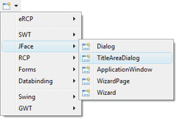
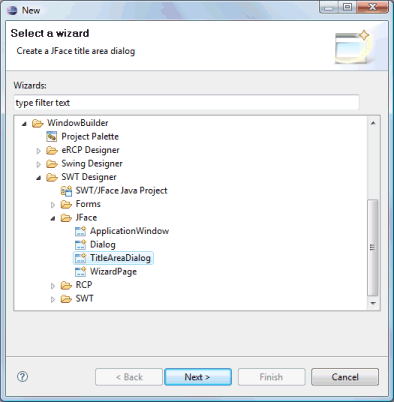
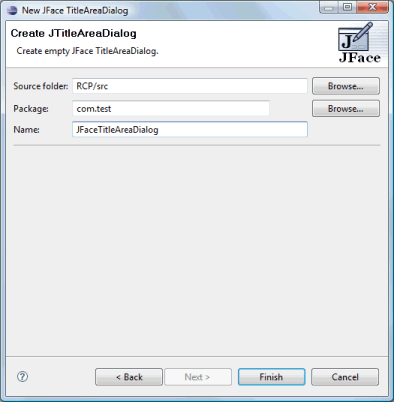
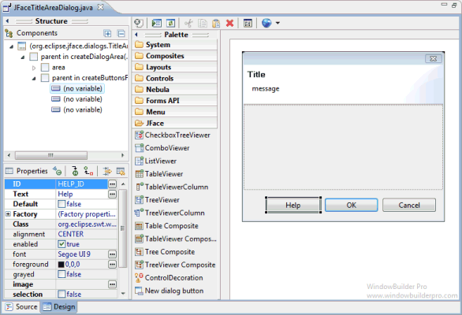
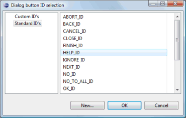
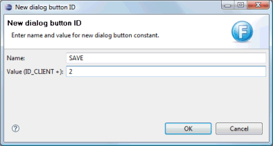
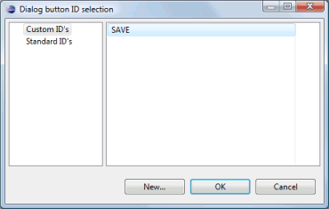

<html>

<head>
<title>JFace TitleAreaDialog Wizard</title>
<link href="../../../book.css" rel="stylesheet" type="text/css">
</head>

<body>

<h1>JFace TitleAreaDialog Wizard</h1>
<table border="0" cellpadding="0" cellspacing="0" width="800">
  <tr>
    <td>
	Subclasses of the JFace <b>TitleAreaDialog</b> class can be
              created using the <b>JFace TitleAreaDialog</b>&nbsp; wizard. The wizard can be
              selected from the drop down Designer wizard menu or from the
              Eclipse <b>New</b> wizard.
              <p>To use the wizard, select the project source folder and package
              to contain the class. Then enter the class name and hit the <b>Finish</b>
              button.</td>
  </tr>
  <tr>
    <td>
	<br>
	&nbsp; </td>
  </tr>
  <tr>
    <td>
    <p><br>
	The wizard generates the following code.</p>
      <blockquote>
            <dl>
              <dt><font face="Courier" size="2" color="#7f0055"><b>import</b></font><font face="Courier New" size="2"> org.eclipse.jface.dialogs.IDialogConstants;<o:p>
                </o:p>
                </font></dt>
              <dt><font face="Courier" size="2" color="#7f0055"><b>import</b></font><font face="Courier New" size="2"> org.eclipse.jface.dialogs.TitleAreaDialog;</font></dt>
              <dt><font face="Courier" size="2" color="#7f0055"><b>import</b></font><font face="Courier New" size="2"> org.eclipse.swt.SWT;<o:p>
                </o:p>
                </font></dt>
              <dt><font face="Courier" size="2" color="#7f0055"><b>import</b></font><font face="Courier New" size="2"> org.eclipse.swt.graphics.Point;</font></dt>
              <dt><font face="Courier" size="2" color="#7f0055"><b>import</b></font><font face="Courier New" size="2"> org.eclipse.swt.layout.GridData;<o:p>
                </o:p>
                </font></dt>
              <dt><font face="Courier" size="2" color="#7f0055"><b>import</b></font><font face="Courier New" size="2"> org.eclipse.swt.widgets.Composite;<o:p>
                </o:p>
                </font></dt>
              <dt><font face="Courier" size="2" color="#7f0055"><b>import</b></font><font face="Courier New" size="2"> org.eclipse.swt.widgets.Control;<o:p>
                </o:p>
                </font></dt>
              <dt><font face="Courier" size="2" color="#7f0055"><b>import</b></font><font face="Courier New" size="2"> org.eclipse.swt.widgets.Shell;<o:p>
                </o:p>
                </font></dt>
              <dt><font face="Courier New" size="2">&nbsp;<o:p>
                </o:p>
                </font></dt>
              <dt><font face="Courier" size="2" color="#7f0055"><b>public class</b></font><font face="Courier New" size="2"> JFaceTitleAreaDialog
                </font><font face="Courier" size="2" color="#7f0055"><b>extends</b></font><font face="Courier New" size="2"> TitleAreaDialog {<o:p>
                </o:p>
                </font></dt>
              <dt><font face="Courier New" size="2">&nbsp;&nbsp;&nbsp; 
                </font><font face="Courier" size="2" color="#7f0055"><b>public</b></font><font face="Courier New" size="2"> JFaceTitleAreaDialog(Shell parentShell) {<o:p>
                </o:p>
                </font></dt>
              <dt><font face="Courier New" size="2">&nbsp;&nbsp;&nbsp;
                &nbsp;&nbsp;&nbsp;&nbsp;</font><font face="Courier" size="2" color="#7f0055"><b>super</b></font><font face="Courier New" size="2">(parentShell);<o:p>
                </o:p>
                </font></dt>
              <dt><font face="Courier New" size="2">&nbsp;&nbsp;&nbsp; }<o:p>
                </o:p>
                </font></dt>
              <dt><font face="Courier New" size="2">&nbsp;&nbsp;&nbsp; 
                </font><font face="Courier" size="2" color="#7f0055"><b>protected</b></font><font face="Courier New" size="2">
                Control createDialogArea(Composite parent) {<o:p>
                </o:p>
                </font></dt>
              <dt><font face="Courier New" size="2">&nbsp;&nbsp;&nbsp;
                &nbsp;&nbsp;&nbsp;&nbsp;Composite area = (Composite)
                </font><font face="Courier" size="2" color="#7f0055"><b>super</b></font><font face="Courier New" size="2">.createDialogArea(parent);</font></dt>
              <dt><font face="Courier New" size="2">&nbsp;&nbsp;&nbsp;&nbsp;&nbsp;&nbsp;&nbsp;
                Composite container = </font>
				<font face="Courier" size="2" color="#7f0055"><b>new</b></font><font face="Courier New" size="2"> Composite(area, SWT.</font><font size="2" color="#0000c0" face="Courier"><i>NONE</i></font><font face="Courier New" size="2">);</font></dt>
              <dt><font face="Courier New" size="2">&nbsp;&nbsp;&nbsp;&nbsp;&nbsp;&nbsp;&nbsp;
                container.setLayoutData(new GridData(GridData.</font><font size="2" color="#0000c0" face="Courier"><i>FILL_BOTH</i></font><font face="Courier New" size="2">));<o:p>
                </o:p>
                </font></dt>
              <dt><font face="Courier New" size="2">&nbsp;&nbsp;&nbsp; &nbsp;&nbsp;&nbsp;&nbsp;</font><font face="Courier" size="2" color="#7f0055"><b>return</b></font><font face="Courier New" size="2"> 
				area;<o:p>
                </o:p>
                </font></dt>
              <dt><font face="Courier New" size="2">&nbsp;&nbsp;&nbsp; }<o:p>
                </o:p>
                </font></dt>
              <dt><font face="Courier New" size="2">&nbsp;&nbsp;&nbsp; 
                </font><font face="Courier" size="2" color="#7f0055"><b>protected</b></font><font face="Courier New" size="2">
                </font><font face="Courier" size="2" color="#7f0055"><b>void</b></font><font face="Courier New" size="2"> createButtonsForButtonBar(Composite parent) {<o:p>
                </o:p>
                </font></dt>
              <dt><font face="Courier New" size="2">&nbsp;&nbsp;&nbsp;
                &nbsp;&nbsp;&nbsp;&nbsp;createButton(parent,
                IDialogConstants.</font><font size="2" color="#0000c0" face="Courier"><i>OK_ID</i></font><font face="Courier New" size="2">,</font></dt>
              <dt><font face="Courier New" size="2">&nbsp;&nbsp;&nbsp;&nbsp;&nbsp;&nbsp;&nbsp;&nbsp;&nbsp;&nbsp;&nbsp;
                IDialogConstants.</font><font size="2" color="#0000c0" face="Courier"><i>OK_LABEL</i></font><font face="Courier New" size="2">,&nbsp;</font><font face="Courier" size="2" color="#7f0055"><b>true</b></font><font face="Courier New" size="2">);<o:p>
                </o:p>
                </font></dt>
              <dt><font face="Courier New" size="2">&nbsp;&nbsp;&nbsp;
                &nbsp;&nbsp;&nbsp;&nbsp;createButton(parent,
                IDialogConstants.</font><font size="2" color="#0000c0" face="Courier"><i>CANCEL_ID</i></font><font face="Courier New" size="2">,<o:p>
                </o:p>
                </font></dt>
              <dt><font face="Courier New" size="2">&nbsp;&nbsp;&nbsp;
                &nbsp;&nbsp;&nbsp;&nbsp;&nbsp;&nbsp;&nbsp;&nbsp;IDialogConstants.</font><font size="2" color="#0000c0" face="Courier"><i>CANCEL_LABEL</i></font><font face="Courier New" size="2">,
                </font><font face="Courier" size="2" color="#7f0055"><b>false</b></font><font face="Courier New" size="2">);<o:p>
                </o:p>
                </font></dt>
              <dt><font face="Courier New" size="2">&nbsp;&nbsp;&nbsp; }<o:p>
                </o:p>
                </font></dt>
              <dt><font face="Courier New" size="2">&nbsp;&nbsp;&nbsp; 
                </font><font face="Courier" size="2" color="#7f0055"><b>protected</b></font><font face="Courier New" size="2">
                Point getInitialSize() {<o:p>
                </o:p>
                </font></dt>
              <dt><font face="Courier New" size="2">&nbsp;&nbsp;&nbsp; &nbsp;&nbsp;&nbsp;&nbsp;</font><font face="Courier" size="2" color="#7f0055"><b>return</b></font><font face="Courier New" size="2">
                </font><font face="Courier" size="2" color="#7f0055"><b>new</b></font><font face="Courier New" size="2"> 
				Point(500, 375);<o:p>
                </o:p>
                </font></dt>
              <dt><font face="Courier New" size="2">&nbsp;&nbsp;&nbsp; }<o:p>
                </o:p>
                </font></dt>
              <dt><font face="Courier New" size="2">}</font></dt>
            </dl>
      </blockquote>
      <p>When editing JFace TitleAreaDialogs, any widget
      may be added to the main content
      area. In the button bar area, only <b>Dialog Buttons</b> may be added (on
      the JFace Viewers palette).</p>
      <p></p>
      <p>When adding a new dialog button, you can select an ID from a predefined
      list by clicking on the &quot;...&quot; button in the <b>ID</b> property.
      The <b>Standard ID's</b> shown are all of the standard button ID's defined
      in the <b>IDialogConstants</b> interface.<p>
	<p>You
      can create news IDs by clicking on the <b>New</b> button. ID names need to
      be valid Java identifiers (preferably uppercase). The ID values are then
      defined as offsets from <b>IDialogConstants</b>.<b>ID_CLIENT</b>.<p>
	<p>Any
      new IDs are then listed in the <b>Custom ID's</b> list.<p>
	
    </td>
  </tr>
</table>
</body>
</html>
